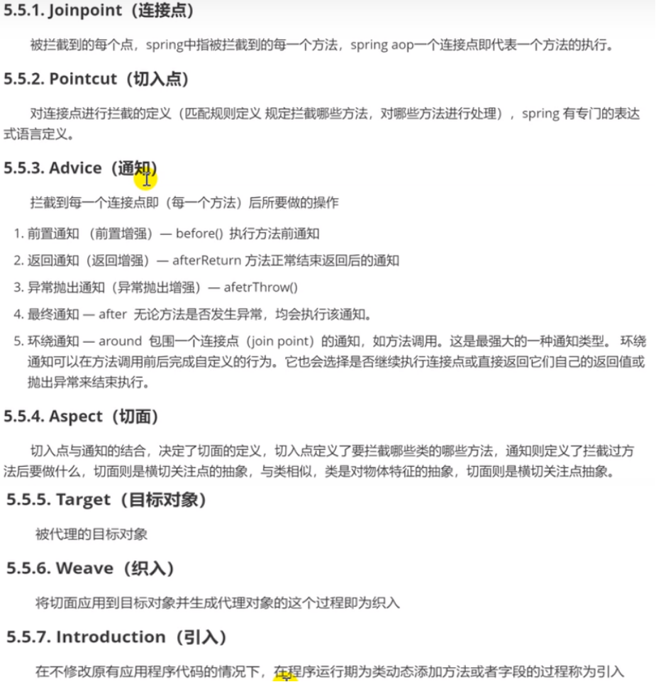
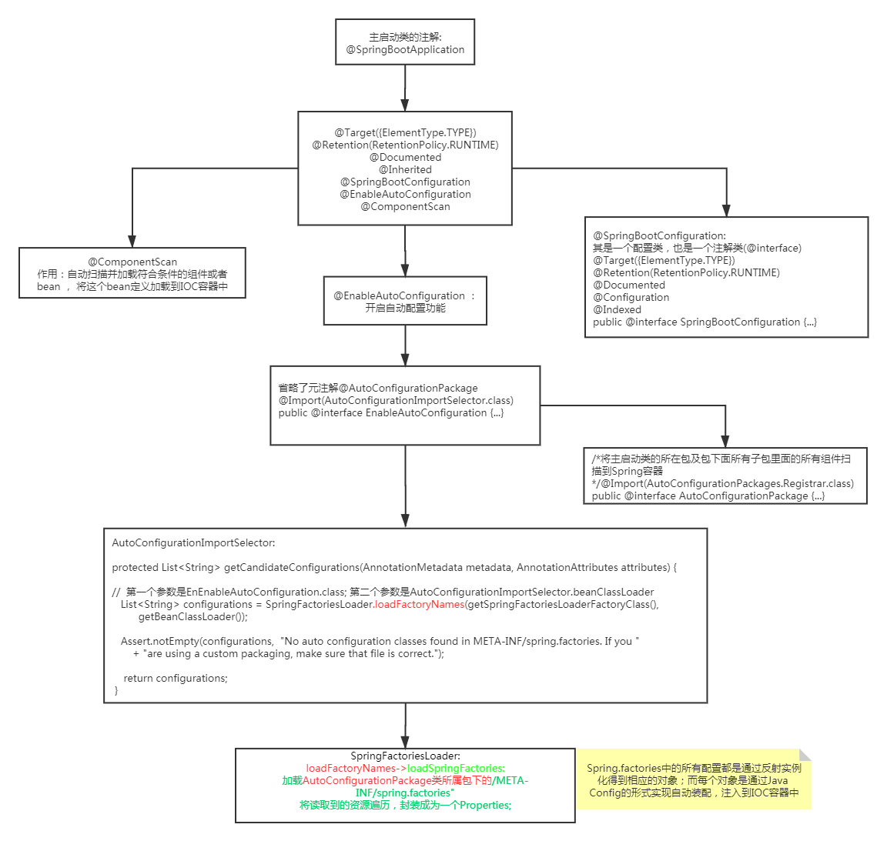

Spring
Maven
四大特性
- I.依赖管理系统
1、 基础依赖
用 groupId、 artifactId、 version 组成的Coordination（坐标）唯一标识一个依赖; 通过修改配置文件来管理jar包
1)坐标属性的理解: Maven 坐标为各种组件引入了秩序，任何一个组件都必须明确定义自己的坐标。
2)groupId: 定义当前 Maven 项目隶属的实际项目-公司名称, jar包所在仓库路径
3)artifactId(工程名): 该元素定义实际项目中的一个 Maven 模块-项目名
4)version: 该元素定义 Maven 项目当前所处的版本，也即所需要下载的jar包版本。
传递性依赖: 让我们在使用某个jar时，不用考虑它依赖了什么，不用担心引入多余的依赖，Maven会解析各个直接依赖的POM，将那些必要的间接依赖，以传递性依赖的形式引入到当前项目中。
但是传递依赖可能产生冲突，即A间接依赖两个不同的版本的C,可以通过exclusions排除冲突版本。
依赖范围: - II. 多模块构建 将一个项目分解为多个模块已经是一个很通用的方式, 在 Maven 中需要定义一个 parent POM 作为一组 module 的聚合 POM。 在该 POM 中可以使用标签来定义一组子模块。parent POM 不会有什么实际构建产出。 而parent POM 中的 build 配置以及依赖配置都会自动继承给子 module。
- III. 一致的项目结构(不同的 IDE 项目结构是一致) 制定了一套项目目录结构作为标准的 Java 项目结构,解决不同 ide 带来的文件目录不一致问题。
- IV. 一致的构建模型和插件机制
<dependency>
<groupId>javax.servlet</groupId> // 包名/项目名
<artifactId>javax.servlet-api</artifactId> // 某一模块名
<version>3.1.0</version> // 所需要jar包的版本
</dependency>
常用命令
注意
- maven中约定大于配置，因此导出target时可能会遇到配置文件无法导出的情况，解决方案是在pom.xml中的build中配置resources，来防止导出失败。
<build>
<resources>
<resource>
<directory>src/main/resources</directory>
<includes>
<include>**/*.properties</include>
<include>**/*.xml</include>
</includes>
<filtering>true</filtering>
</resource>
<resource>
<directory>src/main/java</directory>
<includes>
<include>**/*.properties</include>
<include>**/*.xml</include>
</includes>
<filtering>true</filtering>
</resource>
</resources>
</build>
Prepare
- POJO
Plain Old Java Object, “简单java对象”。POJO的内在含义是指那些没有从任何类继承、也没有实现任何接口，更没有被其它框架侵入的java对象。 - JavaBean对象
JavaBean是一个遵循特定写法的Java类,是一种Java语言编写的可重用组件,它的方法命名,构造及行为必须符合特定的约定： 1、这个类必须具有一个公共的(public)无参构造函数； 2、所有属性私有化（private）； 3、私有化属性必须通过public类型的方法(getter和setter)暴露给其他程序,并且方法的命名也必须遵循一定的命名规范。 4、这个类应是可序列化的。（比如可以实现Serializable 接口，用于实现bean的持久性）
IoC(Inverse of Control)
控制反转是将对象实例化的创建过程交给外部容器去负责, 而非由程序员在代码中事先显示实例化：对象仅通过构造函数参数、工厂方法的参数，或对象实例中(实例可以由构造函数或者工厂方法返回)的属性来定义所需的依赖关系（即它们使用的其他对象）。然后容器在创建bean时注入这些依赖项。这个过程基本上是bean本身(即通过使用类的直接构造或服务定位器模式等机制来控制其依赖项的实例化或位置)的逆过程，因此称为控制反转;
依赖注入(Dependency Injection， DI)是IOC的具体实现，可以看作属性赋值的一种操作(本质是基于反射，调用bean类的setter方法或者构造方法，传递需要注入的对象)；依赖: 指Bean对象的创建依赖于容器；注入 : 指Bean对象所依赖的资源, 由容器来设置和装配。
-
Container Review
configuration meatdata:
The configuration metadata is represented in XML, Java annotations, or Java code.
It lets you express the objects that compose your application and the rich interdependencies between those objects.
This configuration metadata represents how you, as an application developer, tell the Spring container to instantiate, configure, and assemble the objects in your application.
Spring Container:
The org.springframework.beans and org.springframework.context packages are the basis for Spring Framework’s IoC container.
The BeanFactory interface provides an advanced configuration mechanism capable of managing any type of object. ApplicationContext is a sub-interface of BeanFactory。
核心技术: 工厂模式、xml解析、反射技术、策略模式(创建表示各种策略的对象和一个行为随着策略对象改变而改变的 context 对象，策略对象就是configuration metadata)、单例模式(IoC容器实例化的对象都是单例对象， 相应的构造函数只会被调用一次) -
Instantiating Beans
1、Instantiation with a Constructor: 如果bean类中包含属性，要求bean提供无参构造函数;
<bean id="exampleBean" class="examples.ExampleBean"/>
2、Instantiation with a Static Factory Method， Spring解析配置文件，通过反射调用静态工厂类的静态工厂方法，由于不使用容器来构造实例，可以在构造实例前执行其他操作。
<bean id="clientService"
class="examples.ClientService" // 包含 static factory method的类
factory-method="createInstance"/> // 静态工厂方法，返回一个实例化对象
3、Instantiation by Using an Instance Factory Method
使用实例工厂方法进行实例化会从容器中调用现有bean的非静态方法来创建新bean。要使用此机制，请将class属性留空，并在factory-bean属性中指定当前容器（或父容器或祖先容器）中包含要创建对象的实例方法的Bean的名称。使用factory-method属性设置工厂方法本身的名称。以下示例显示了如何配置此类Bean：
<!-- the factory bean, which contains a method called createInstance() -->
<bean id="serviceLocator" class="examples.DefaultServiceLocator">
<!-- inject any dependencies required by this locator bean -->
</bean>
<!-- the bean to be created via the factory bean -->
<bean id="clientService"
factory-bean="serviceLocator"
factory-method="createClientServiceInstance"/> // serviceLocator中的工厂方法(非静态)
- IoC注入
分为setter注入和构造器注入
setter注入:容器通过在bean上调用setter方法来实现基于setter的DI；如果属性是boolean类型, 则没有set方法, 是 is 。
构造器注入:基于构造函数的DI是通过容器调用具有多个参数（每个参数代表一个依赖项）的构造函数来完成的. 构造器注入可能产生循环依赖问题，互相依赖对方导致bean无法实例化，此时可以通过将互相依赖的双方由构造器注入转为setter注入，因为后者是先实例化对象，再去实例化setter方法所需的bean对象；而前者是先去实例化构造器所需的bean对象。
此外还有静态工厂注入和实例化工厂注入，本质都是setter注入，不过是被注入的bean对象是通过静态工厂方法或者实例化工厂方法获取的；例如userDao是通过静态工厂方法实例化的。
<bean id="userService" class="com.wh.service.UserService">
<!--set方法注入
通过property属性注入
name:bean对象中属性字段名, 该属性需要有对应的setter方法
ref: 该字段类型对应的bean 的id
value: 注入常用对象类型或者基本类型时，指定其值
-->
<!--注入Javabean对象-->
<property name="_userDao" ref="userDao"/>
<!--注入常用对象类型或者基本类型-->
<!-- 注入类型为String -->
<property name="host" value="127.0.0.1"/>
<!-- 注入类型为 Integer -->
<property name="port" value="9999"/>
<!-- 注入类型为List -->
<property name="_strList">
<list>
<value>wh</value>
<value>xx</value>
</list>
</property>
<!--通过构造器注入-->
<constructor-arg name="_studentDao" ref="studentDao"/>
<!--index属性来明确指定构造函数参数的索引-->
<constructor-arg name="uname" value="root" index="1"/>
</bean>
<bean name="studentDao" class="com.wh.dao.StudentDao"></bean>
<!--通过import，加载dao的配置文件， dao.xml中通过静态工厂方法实例化UserDao对象, -->
<import resource="dao.xml"/>
<!-- p空间注入: properties namespace, 要求属性提供set方法，本质是setter注入 -->
<!-- 导入约束 :-->
xmlns:p="http://www.springframework.org/schema/p"
<bean id="user" class="com.kuang.pojo.User" p:name="狂神" p:age="18"/>
<!-- c空间注入: construct namespace, 要求属性提供有参构造函数，本质是构造器注入 -->
<!-- 导入约束 -->
xmlns:c="http://www.springframework.org/schema/c"
<!--C(构造: Constructor)命名空间 , 属性依然要设置set方法-->
<bean id="user" class="com.kuang.pojo.User" c:name="狂神" c:age="18"/>
- IoC自动装配
自动装配是使用spring满足bean依赖的一种方法；spring会在应用上下文中为某个bean寻找其依赖的bean。
Spring中bean有三种装配机制，分别是:在xml中显式配置;在java中显式配置;隐式的bean发现机制和自动装配。
Spring的自动装配需要从两个角度来实现，或者说是两个操作：
组件扫描(component scanning)：spring会自动发现应用上下文中所创建的bean；
自动装配(autowiring)：spring自动满足bean之间的依赖，也就是我们说的IoC/DI。
1.使用xml
public class Cat {
public void shout() {
System.out.println("miao~");
}
}
public class Dog {
public void shout() {
System.out.println("wang~");
}
}
// 新建一个用户类 User
public class User {
private Cat cat;
private Dog dog;
private String str;
// setter方法
}
<!-- 使用xml -->
<?xml version="1.0" encoding="UTF-8"?>
<beans xmlns="http://www.springframework.org/schema/beans"
xmlns:xsi="http://www.w3.org/2001/XMLSchema-instance"
xsi:schemaLocation="http://www.springframework.org/schema/beans
http://www.springframework.org/schema/beans/spring-beans.xsd">
<bean id="dog" class="com.kuang.pojo.Dog"/>
<bean id="cat" class="com.kuang.pojo.Cat"/>
<bean id="user" class="com.kuang.pojo.User">
<property name="cat" ref="cat"/>
<property name="dog" ref="dog"/>
<property name="str" value="qinjiang"/>
</bean>
</beans>
1.2. 使用简化xml:
当一个bean节点带有 autowire="byName" 的属性时,
将查找其类中所有的set方法名，例如setCat，获得将set去掉并且首字母小写的字符串，例如cat;
去spring容器中寻找是否有此字符串名称id的对象;
如果有，就取出注入；如果没有，就报空指针异常。
autowire byType (按类型自动装配):
使用autowire="byType", 首先需要保证：同一类型的对象，在spring容器中唯一。如果不唯一，会报不唯一的异常。
<bean id="user" class="com.kuang.pojo.User" autowire="byName">
<property name="str" value="qinjiang"/>
</bean>
<!-- ====== -->
<bean id="user" class="com.kuang.pojo.User" autowire="byType">
<property name="str" value="qinjiang"/>
</bean>s
2. 使用注解: 利用注解的方式注入属性
前提: 在spring配置文件中引入context文件头; 开启属性注解支持！
@Resource注解:
1、注解默认通过属性字段名称查找对应的bean对象(byName)，因此该名称一般应与bean标签的id值相同。
2、如果不相同，则会通过属性对应的class类型来查找。
3、属性可以提供setter方法，也可以不提供。
4、注解可以声明在属性字段上，或setter方法上。
5、可以设置注解的name属性，要与bean标签的id值相同。
6、当注入接口时，如果接口只有一个实现类，则正常实例化；否则需要通过注解的name属性指定具体的实现类的bean标签的id，否则会产生歧义而报错。
@Autowired注解:
1、默认通过class类型查找bean对象(byType)，与属性字段的名称无关。
2、属性可以提供setter方法，也可不提供。
3、注解可以声明在属性字段上，或setter方法上。
4、@Autowired注解没有name属性，可以添加 @Qualifier结合使用，通过value属性值查找bean对象(value对象必须设置，且需与bean标签id相同)。
// Bean类中不需要再设置setter方法；
public class User {
@Autowired
@Qualifier(value="cat_alias")
private Cat cat;
@Resource
private Dog dog;
}
<?xml version="1.0" encoding="UTF-8"?>
<beans xmlns="http://www.springframework.org/schema/beans"
xmlns:xsi="http://www.w3.org/2001/XMLSchema-instance"
xmlns:context="http://www.springframework.org/schema/context"
xsi:schemaLocation="http://www.springframework.org/schema/beans
https://www.springframework.org/schema/beans/spring-beans.xsd
http://www.springframework.org/schema/context
http://www.springframework.org/schema/context/spring-context.xsd">
<!-- 需要在spring配置文件中引入context文件头 -->
<!--开启属性注解支持-->
<context:annotation-config/>
<bean id="dog" class="com.kuang.pojo.Dog"/>
<bean id="cat_alias" class="com.kuang.pojo.Cat"/>
<bean id="user" class="com.kuang.pojo.User"/>
</beand>
3. 使用java config
/**
Configuration本身也是一个@Component，以该注解修饰的类，代表是一个配置类；
Import，导入合并其他配置类，类似于配置文件中的 inculde 标签
*/
@Configuration
@Import(MyConfig2.class)
public class MyConfig{
// 注册一个bean, 等同于xml配置，方法名等价于 bean id
@Bean
public User getUser{
return new User();
}
}
@Test
public void test(){
// 通过 AnnotationConfigApplicationContext 获取上下文
// 通过配置类的对象来加载
ApplicationContext applicationContext =
new AnnotationConfigApplicationContext(MyConfig.class);
User user = (User)applicationContext.getBean("getUser");
}
- IoC扫描器
为了避免手动配置大量的bean对象，Spring提供了扫描器，对扫描到的bean对象进行统一管理，简化开发配置。
在需要实例化的JavaBean对象的类定义前加上注解:
Dao层: @Repository; Service层: @Service; Controller层: @Controller; 普通层: @Component
<!--设置扫描范围-->
<context:component-scan base-package="com.wh" />
对于基本类型或者String类型的属性，可以使用注解注入值
// 可以不用提供set方法，直接在直接名上添加@value("值")
@Component("user")
// 相当于配置文件中 <bean id="user" class="当前注解的类"/>
public class User {
@Value("wh")
// 相当于配置文件中 <property name="name" value="wh"/>
public String name;
// 如果提供了set方法，在set方法上添加@value("值");
@Value("wh")
public void setName(String name) {
this.name = name;
}
}
-
Bean作用域
1、singleton作用域 容器中默认情况是lazy-init=false, 原因是可以提前发现配置问题；Bean对象在启动时就会被实例化放入缓存池中，使用时，不需要再去实例化，提高效率。
什么类型对象适合单例/什么类型对象适合交给IoC实例化?:
无状态对象，即不存在会改变当前对象状态的成员变量，如Controller、Dao、Service层。这些业务层考虑到线程安全，其中不需要包含会变化的属性值或者说不需要实例变量的存在，其依赖的bean对象都是通过注入获取到实例。
2、prototype作用域
3、Web应用中的作用域
-
Bean生命周期
包括Bean的定义、初始化、使用和销毁4个阶段:
AOP
Aspect Oriented Programming: 面向切面编程
通过代理模式，可以在指定位置执行对应流程，从而将一些横向功能抽离形成一个独立的模块，然后再在指定位置插入这些功能。
代理模式
为某一个对象(委托类)提供一个代理(代理类)，用来控制对这个对象的访问；要求委托类和代理类有一个共同的父类或父接口，代理类会对请求做预处理、过滤，将请求分配给指定对象。
代理模式的两个设计原则: 1、代理类与委托类具有相似的行为(通常是实现相同的接口)；2、代理类增强委托类的行为。
常见的代理模式:静态代理和动态代理。
-
静态代理
为某个对象(委托类，即目标对象)提供一个代理，以控制对这个对象的访问。代理类和委托类有共同的父类/父接口，这样任何可以使用委托类对象的地方都可以使用代理类对象。代理类负责请求的预处理、过滤、将请求分配给委托类处理，以及委托类执行完请求后的后续处理。
特点: 一个目标对象对应一个代理对象，代理类中的目标对象类型是固定的(在代理对象执行方法前就已确定)；整体实现比较简单，容易理解。
缺点: 当委托类增加，代理类可能需要成倍增加，代理类数量过度；当接口中功能增加时或者修改时，会影响所有的实现类。 -
动态代理
动态代理的根据实现方式的不同可以分为 JDK 动态代理和 CGlib 动态代理。
JDK 动态代理：利用反射机制生成一个实现公共接口的代理对象，在调用具体方法前调用InvokeHandler来处理。
/**
* jdk 动态代理类
* 需要实现 InvocationHandler
*/
public class jdkDynamicProxy implements InvocationHandler{
private Object target; //目标对象类型不固定
// 通过带参构造器传入目标对象
public jdkDynamicProxy(Object target) {
this.target = target;
}
/**
* public static Object newProxyInstance(ClassLoader loader,
Class<?>[] interfaces,
InvocationHandler h)
* loader: 代理类的类加载器
* interfaces: 代理类/委托类 需要实现的接口数组
* h:一个InvocationHandler接口，表示代理实例的调用处理程序的接口，每个代理实例都具有一个
* 关联的调用处理程序. 通过代理实例调用目标对象的方法时，将对方法调用进行编码，并将其指派到
* 该代理实例的调用处理程序的 invoke 方法
* @return object: 代理实例， 具有一个 invocation handler,
* 该代理实例所属的类实现了传入的接口数组，由传入的特定类加载器来定义
*/
public Object getProxy(){
Object object = Proxy.newProxyInstance(this.getClass().getClassLoader(),
target.getClass().getInterfaces(),
this
);
return object;
}
/**
*
* @param proxy 调用该方法的代理实例, getProxy返回的代理对象
* @param method 目标对象的方法
* @param args 目标方法所需的参数
* @return
* @throws Throwable
*/
@Override
public Object invoke(Object proxy, Method method, Object[] args) throws Throwable {
before();
Object object = method.invoke(target);
after();
return object;
}
public void before(){
System.out.println("before");
}
public void after(){
System.out.println("after");
}
}
CGlib 动态代理：针对类实现代理，对委托类生成一个子类，并覆盖其中的方法实现增强。
<!--添加cglib依赖 -->
<dependency>
<groupId>cglib</groupId>
<artifactId>cglib</artifactId>
<version>2.2.2</version>
</dependency>
/**
* 方法拦截器
*/
public class CglibDynamicProxy implements net.sf.cglib.proxy.MethodInterceptor {
/**
* 拦截器
*
* @param o cglib生成的代理实例
* @param method 目标类中被代理的方法的引用
* @param objects 参数列表
* @param methodProxy 生成的代理类对方法的代理引用
* @return
* @throws Throwable
*/
@Override
public Object intercept(Object o, Method method, Object[] objects, MethodProxy methodProxy) throws Throwable {
before();
// 调用目标类中的方法
Object object = methodProxy.invoke(target, objects);
after();
return object;
}
public Object target;
public CglibDynamicProxy(Object target) {
this.target = target;
}
public Object getProxy(){
// 通过enhancer的create()方法生成一个类，用于生成代理对象。
Enhancer enhancer = new Enhancer();
// 将目标类设为代理类的父类
enhancer.setSuperclass(target.getClass());
// 设置拦截器， 回调对象为本身
enhancer.setCallback(this);
// 返回代理对象
return enhancer.create();
}
private void before(){
System.out.println("before");
}
private void after(){
System.out.println("after");
}
}
区别：JDK代理只能对实现接口的类生成代理(代理类和委托类需要实现共同的接口)；
CGlib是针对类实现代理，对委托类生成一个子类，并覆盖其中的方法实现增强；但由于采用继承的实现方式，不能代理final修饰的类。
动态代理特点: 在程序运行时，动态创建目标对象，通过带参构造器传递给代理对象, 即代理类中的目标对象类型不固定，运行时通过反射确定实际目标对象的类型。
AOP
- AOP用处
AOP主要应用于日志记录、性能统计、安全控制、事物处理等方面，实现公共功能性的重复使用。 - 特点
1、降低模块之间的耦合度，提供业务代码的聚合度；
2、提高代码复用性；
3、提供系统扩展性；
4、可以在不影响原有功能基础上添加新的功能。 - 实现
可以采用xml配置或者注解实现，底层实现是基于动态代理(JDK + CGLIB)
<!--配置aop, 需要在beans中引入 aop 的 规范-->
<aop:config>
<!--切面-->
<aop:aspect ref="logCut02">
<!--切入点-->
<aop:pointcut id="cut" expression="execution(* com.wh.service.*.*(..))"/>
<!--配置通知, 设置对应方法名和切入点-->
<aop:before method="before" pointcut-ref="cut"/>
<aop:after method="after" pointcut-ref="cut"/>
<aop:after-returning method="afterReturn" pointcut-ref="cut"/>
<aop:after-throwing method="afterThrow" pointcut-ref="cut" throwing="e"/>
<aop:around method="around" pointcut-ref="cut"/>
</aop:aspect>
</aop:config>
/**
* 切面: 切入点和通知的抽象
* 切入点:定义要拦截哪些类的哪些方法
* 通知: 定义拦截之后方法要做什么
*/
@Component // 将对象交给IOC容器实例化
@Aspect //声明当前类是一个切面
public class LogCut {
/**
* 切入点: 匹配规则
* @Pointcut("匹配规则")， 根据规则选择方法是否被拦截
* 常见匹配规则: "execution(* *(..))"
* 1、这里的第一个 * 表示所有方法修饰范围，可以指定是public,protected,private
* 如"execution(public *...))"
* "*.(..)" 表示任意包下的任意方法, .. 指代参数
* 2、可以指定某个包下的方法，也可以指定方法类型，如setter或getter方法
* 如 "execution(* com.wh.service.*.*(..))",
* "execution(* set*(..))"
* 3、如果想拦截某个包及其子包中的方法，
* "execution(* com.wh.service..*.*(..))", 与上面相比, 多了一个 .
*
*/
@Pointcut("execution(* com.wh.service.*.*(..))")
public void cut(){
}
/**
* 声明前置通知，并插入到切入点(通过value指定)
* 目标类方法指向前，指向前置通知
*
*/
@Before(value = "cut()")
public void before(){
System.out.println("前置通知");
}
/**
* 声明返回通知，目标类的方法在无异常返回时，执行该同志
*/
@AfterReturning(value = "cut()")
public void afterReturn(){
System.out.println("返回通知");
}
/**
* 声明最终通知， 无论是否发生异常，都会执行该通知
*/
@After(value = "cut()")
public void after(){
System.out.println("最终通知");
}
/**
* 声明异常通知，目标类方法执行发生异常时，执行该通知
*/
@AfterThrowing(value = "cut()", throwing = "e")
public void afterThrow(Exception e){
System.out.println("异常通知:"+e.getMessage());
}
/**
* 声明环绕通知，目标类方法执行前后，都可以通过环绕通知定义响应的处理，相当于同时实现了
* 上述四种通知
* 需要通过显示调用方法(point.proceed())，否则无法访问指定方法
* @param point
* @return
*/
@Around(value = "cut()")
public Object around(ProceedingJoinPoint point){
System.out.println("环绕通知-before");
Object object=null;
try{
// 显示调用对应方法
System.out.println("通过注解配置环绕通知");
object = point.proceed();
System.out.println("target:"+point.getTarget());
System.out.println("环绕通知-afterReturn");
}catch (Throwable throwable){
throwable.printStackTrace();
System.out.println("环绕通知-afterThrowing");
}finally {
System.out.println("环绕通知-after");
}
return object;
}
}
- 基本概念

Spring Task
定时任务
- 基于xml配置
<!--配置定时任务-->
<task:scheduled-tasks>
<task:scheduled ref="taskJob" method="job1" cron="0/2 * * * * ?"/>
<task:scheduled ref="taskJob" method="job2" cron="0/5 * * * * ?"/>
</task:scheduled-tasks>
- 基于注解
<!--配置定时任务驱动，spring才能识别scheduled注解-->
<task:annotation-driven/>
@Scheduled(cron = "0/2 * * * * ?")
public void job1(){
System.out.println("TaskJob2 job1..."+simpleDateFormat.format(new Date()));
}
- cron expression
cron表达式至少有6个由空格分隔得时间元素，从左到右依次是
秒、分钟、小时(0~23)、日期、月份、星期中的日期(SUN-SAT)、年份(1970~2099)
<!-- 同一个时间元素，通过 , 分隔 -->
<!-- 表示每天10点、14点、16点执行任务，*表示任意，? 表示不确定 -->
0 0 10,14,16 * * ?
<!--表示每月前10天，每隔15分钟执行任务， 1-10表示1到10号-->
0 0 15,30,45 * 1-10 * ?
MyBatis
持久层框架，所谓持久化是将程序数据在持久状态和瞬时状态间转换的机制。通俗的讲，就是瞬时数据（比如内存中的数据，是不能永久保存的）持久化为持久数据（比如持久化至数据库中，能够长久保存）
入门
<!-- mybatis-config.xml -->
<?xml version="1.0" encoding="UTF-8" ?>
<!DOCTYPE configuration
PUBLIC "-//mybatis.org//DTD Config 3.0//EN"
"http://mybatis.org/dtd/mybatis-3-config.dtd">
<configuration>
<environments default="development">
<environment id="development">
<transactionManager type="JDBC"/>
<dataSource type="POOLED">
<property name="driver" value="com.mysql.jdbc.Driver"/>
<property name="url" value="jdbc:mysql://localhost:3306/how2java?useSSL=true&
useUnicode=true&characterEncoding=UTF-8&serverTimezone=UTC"/>
<property name="username" value="root"/>
<property name="password" value="admin"/>
</dataSource>
</environment>
</environments>
<mappers>
<mapper resource="com/wh/dao/UserMapper.xml"/>
</mappers>
</configuration>
<!-- UserMapper.xml -->
<?xml version="1.0" encoding="UTF-8" ?>
<!DOCTYPE mapper
PUBLIC "-//mybatis.org//DTD Mapper 3.0//EN"
"http://mybatis.org/dtd/mybatis-3-mapper.dtd">
<!--namespace 绑定对应的接口-->
<mapper namespace="com.wh.dao.UserMapper">
<!--
id: 对应方法名
resultType: 查询返回值类型
parameterType: 参数类型，
获取参数:
通过 #{param_name}取得参数值, 适用于较少参数；
此外可以在方法中为参数添加 @param(new_name) 注解，
则此时 需要通过 #{new_name}取得参数值
通过 #{obj_attribute}获取对象属性
通过 #{map_key} 获取map 键值对的 value, 适用于多个参数
考虑到实例化一个包含太多字段的pojo对象，来仅仅修改很少的字段, 采用hashmap,
更为适合，此时parameterType类型为 map.
-->
<!--结果集映射， 解决数据库列名和POJO对象的属性名不一致
sql语句中的resultType换用resultMap, 指向对应的resultMap id;
对于 多对一 或者 一对多 等sql查询返回结果，其返回类型不是简单的 java bean对象类型，
也需要通过reseultMap进行映射
-->
<!--<resultMap id="UserMap" type="User">-->
<!--将属性映射到对应的列, 仅需要构建名称不一致的映射关系-->
<!--<result property="password" column="other_"/>-->
<!--</resultMap>-->
<select id="getUserList" resultType="com.wh.pojo.User" >
select * from how2java.users
</select>
<select id="getUserById" resultType="com.wh.pojo.User" parameterType="int">
SELECT * FROM how2java.users WHERE id=#{id}
</select>
<!--对象中的属性可以直接取得-->
<insert id="addUser" parameterType="com.wh.pojo.User" >
insert into how2java.users (id, name, password) values (#{id}, #{name},#{password});
</insert>
<update id="updateUser" parameterType="com.wh.pojo.User">
update how2java.users set name=#{name}, password=#{password} where id=#{id};
</update>
<update id="updateUserPWD" parameterType="com.wh.pojo.User">
update how2java.users
set password=#{pwd}
where id=#{userid};
</update>
<delete id="deleteUser" parameterType="int">
DELETE FROM how2java.users WHERE id=#{id}
</delete>
</mapper>
public interface UserMapper {
// 查询所有用户
public List<User> getUserList();
// 根据ID查询
public User getUserById(int id);
// 增加用户
public int addUser(User user);
// 修改用户
public int updateUser(User user);
public int updateUserPWD(Map<String, Object> map);
// 删除用户
public int deleteUser(int id);
}
/**
工具类，用于 获取 SqlSession 对象
*/
public class MybatisUtils {
private static SqlSessionFactory sqlSessionFactory;
static {
try {
String resource = "mybatis-config.xml";
InputStream inputStream = Resources.getResourceAsStream(resource);
sqlSessionFactory = new SqlSessionFactoryBuilder().build(inputStream);
}catch (IOException e){
e.printStackTrace();
}
}
public static SqlSession getSqlSession(){
return sqlSessionFactory.openSession();
}
}
public class UserDaoTest {
@Test
public void test(){
try(SqlSession sqlSession = MybatisUtils.getSqlSession()){
UserMapper userMapper = sqlSession.getMapper(UserMapper.class);
// 获取全部用户信息
List<User> userList = userMapper.getUserList();
userList.forEach(System.out::println);
// 根据id获取用户
System.out.println(userMapper.getUserById(2));
/**
* 增删改 需要提交事务后，数据才能写入数据库中，获取 SqlSession对象时，可以为
* openSession 提供一个 boolean参数， 表示是否开启 autoCommit
*/
// 添加用户
System.out.println(userMapper.addUser(new User("dio", "ssm")));
// 修改用户
System.out.println(userMapper.updateUser(new User(5,"ss","密码")));
// Map作为参数，通过key取值，可以避免构造pojo对象实例
Map<String, Object> map = new HashMap<>();
map.put("pwd", "newpwd");
map.put("userid", 8);
System.out.println(userMapper.updateUserPWD(map));
// 删除用户
System.out.println(userMapper.deleteUser(9));
// 提交事务
sqlSession.commit();
}catch (Exception e){
e.printStackTrace();
}
}
}
- 多对一和一对多
<!-- 多对一 -->
<mapper namespace="com.wh.dao.StudentMapper">
<!--实现时，根据查询出的学生的tid, 再去查询对应老师， 相当于子查询-->
<resultMap id="StudentTeacher" type="student">
<result property="id" column="id"/>
<result property="name" column="name"/>
<!--
基本类型映射或者String，使用result;
对象类型映射，使用association;
集合类型，使用collection
javaType or ofType:
javaType 指定 POJO类中属性的类型
ofType 如果该属性属于集合类型， ofType指定了元素类型
-->
<association property="teacher" column="tid" javaType="Teacher" select="getTeacher"/>
</resultMap>
<select id="getStudentList" resultMap="StudentTeacher">
SELECT * from how2java.student;
</select>
<!-- #{id} 中的 'id' 名称并未指定的，而是由MyBatis自行推断的，
这里即使设定为其他值，任然能运行-->
<select id="getTeacher" resultType="Teacher">
SELECT * FROM how2java.teacher WHERE id=#{id}
</select>
<!-- ================================================================== -->
<!--实现时，通过表的联结, 按照结果进行嵌套处理-->
<select id="getStudentList2" resultMap="StudentTeacher2">
SELECT S.id as sid, S.name as sname, T.id as tid, T.name as tname
FROM student S INNER JOIN teacher T
ON S.tid = T.id
</select>
<resultMap id="StudentTeacher2" type="student">
<result property="id" column="sid"/>
<result property="name" column="sname"/>
<association property="teacher" javaType="teacher">
<result property="id" column="tid"/>
<result property="name" column="tname"/>
</association>
</resultMap>
</mapper>
<!-- 一对多 -->
<mapper namespace="com.wh.dao.TeacherMapper">
<!-- 获取所有老师信息， Teacher类中包含 一个 List<Student> student属性 -->
<select id="getTeacherList" resultMap="TS">
SELECT T.id as tid, T.name as tname, S.name as sname
FROM teacher as T INNER JOIN student AS S
ON T.id = S.tid;
</select>
<!-- 根据 id 获取指定老师信息 -->
<select id="getTeacher" resultMap="TS">
SELECT T.id as tid, T.name as tname, S.name as sname
FROM teacher as T, student AS S
WHERE T.id = #{tid}
</select>
<resultMap id="TS" type="teacher">
<result property="id" column="tid"/>
<result property="name" column="tname"/>
<collection property="students" ofType="student">
<result property="name" column="sname"/>
</collection>
</resultMap>
</mapper>
- 作用域和生命周期
SqlSessionFactoryBuilder 这个类可以被实例化、使用和丢弃，一旦创建了 SqlSessionFactory，就不再需要它了。 因此 SqlSessionFactoryBuilder 实例的最佳作用域是方法作用域（也就是局部方法变量）。 你可以重用 SqlSessionFactoryBuilder 来创建多个 SqlSessionFactory 实例，但最好还是不要一直保留着它，以保证所有的 XML 解析资源可以被释放给更重要的事情。
SqlSessionFactory 一旦被创建就应该在应用的运行期间一直存在，没有任何理由丢弃它或重新创建另一个实例。 使用 SqlSessionFactory 的最佳实践是在应用运行期间不要重复创建多次，多次重建 SqlSessionFactory 被视为一种代码“坏习惯”。因此 SqlSessionFactory 的最佳作用域是应用作用域。 有很多方法可以做到，最简单的就是使用单例模式或者静态单例模式。
SqlSession 每个线程都应该有它自己的 SqlSession 实例。SqlSession 的实例不是线程安全的，因此是不能被共享的，所以它的最佳的作用域是请求或方法作用域。 绝对不能将 SqlSession 实例的引用放在一个类的静态域，甚至一个类的实例变量也不行。 也绝不能将 SqlSession 实例的引用放在任何类型的托管作用域中，比如 Servlet 框架中的 HttpSession。 如果你现在正在使用一种 Web 框架，考虑将 SqlSession 放在一个和 HTTP 请求相似的作用域中。 换句话说，每次收到 HTTP 请求，就可以打开一个 SqlSession，返回一个响应后，就关闭它。
映射器实例 映射器是一些绑定映射语句的接口(参见上面的UserMapper接口)。映射器接口的实例是从 SqlSession 中获得的。虽然从技术层面上来讲，任何映射器实例的最大作用域与请求它们的 SqlSession 相同。但方法作用域才是映射器实例的最合适的作用域。 也就是说，映射器实例应该在调用它们的方法中被获取，使用完毕之后即可丢弃。 映射器实例并不需要被显式地关闭。
xml配置
<!-- db.properties -->
driver=com.mysql.cj.jdbc.Driver
<!--
只要参数名不设置为 url 均可
如果是在xml配置文件中直接写定url，其中的 & 需要 写成 & 形式表示转义
-->
jdbcurl=jdbc:mysql://localhost:3306/how2java?useSSL=true&useUnicode=true&characterEncoding=UTF-8&serverTimezone=UTC
username=root
password=admin
<configuration>
<!--引入外部配置条件-->
<properties resource="db.properties"/>
<!-- 也可以在properties 元素的子元素中设置 -->
<!--
<properties>
<properity name="xx" value="xx">
</properties>
-->
<!--
也可以在 SqlSessionFactoryBuilder.build() 方法中传入属性值。例如：
SqlSessionFactory factory = new SqlSessionFactoryBuilder().build(reader, props);
// ... 或者 ...
SqlSessionFactory factory = new SqlSessionFactoryBuilder().build(reader, environment, props);
-->
<!--
如果一个属性在不只一个地方进行了配置，那么，MyBatis 将按照下面的顺序来加载：
首先读取在 properties 元素体内指定的属性。
然后根据 properties 元素中的 resource 属性读取类路径下属性文件，或根据 url 属性指定的路径读取属性文
件，并覆盖之前读取过的同名属性。
最后读取作为方法参数传递的属性，并覆盖之前读取过的同名属性。
-->
<!-- 设置 -->
<settings>
<!--标准日志工厂-->
<!--<setting name="logImpl" value="STDOUT_LOGGING"/>-->
<!--使用LOG4J日志， 需要导入依赖，和提供log4j.properties配置文件-->
<setting name="logImpl" value="LOG4J"/>
<!--开启自动驼峰命名规则，将经典数据库列名 A_column 映射到经典java属性名 aColumn-->
<setting name="mapUnderscoreToCamelCase" value="true"/>
</settings>
<!--配置别名，降低冗余的全限定类名书写-->
<typeAliases>
<!--第一种别名形式: 为java bean对象 设置自定义别名-->
<!--<typeAlias type="com.wh.pojo.User" alias="User"/>-->
<!--第二种形式: 扫描指定包下的POJO对象，默认别名为类的首字母小写， 大写也可以
除此之外，在POJO类上添加 @Alias注解 来自定义别名，然后被扫描
-->
<package name="com.wh.pojo"/>
<!--
实体类比较少可以选择方式一，且可以自定义；
类比较多，建议方式二
-->
</typeAliases>
<environments default="development">
<environment id="development">
<!--
在 MyBatis 中有两种类型的事务管理器（也就是 type="[JDBC|MANAGED]"）：
JDBC – 这个配置直接使用了 JDBC 的提交和回滚设施，它依赖从数据源获得的连接来管理事务作用域。
MANAGED – 这个配置几乎没做什么。它从不提交或回滚一个连接，而是让容器来管理事务的整个生命周期（比
如 JEE 应用服务器的上下文）。 默认情况下它会关闭连接。然而一些容器并不希望连接被关闭，因此需要将
closeConnection 属性设置为 false 来阻止默认的关闭行为
-->
<transactionManager type="JDBC"/>
<dataSource type="POOLED">
<property name="driver" value="${driver}"/>
<property name="url" value="${jdbcurl}"/>
<property name="username" value="${username}"/>
<property name="password" value="${password}"/>
</dataSource>
</environment>
</environments>
<mappers>
<!--使用相对于类路径的资源引用-->
<mapper resource="com/wh/dao/UserMapper.xml"/>
<!--使用映射器接口实现类的完全限定类名,
要求接口和配置文件同名，处于同一个包下-->
<!--<mapper class="com.wh.dao.UserMapper"/>-->
<!--将包内的映射器接口实现全部注册为映射器
同样要求接口和配置文件同名，处于同一个包下
-->
<!--<package name="com.wh.dao"/>-->
</mappers>
</configuration>
使用注解配置
适用于简单sql语句；使用前，需要在配置文件中绑定接口类，使用注解的方式不需要mapper文件；
但通常接口和其mapper文件名相同，且处于同一个包下，这样可以使用class或resource方法读取到，且能同时使用xml和注解的方法配置。
动态SQL
<!--
where 元素只会在子元素返回任何内容的情况下才插入 “WHERE” 子句。而且，若子句的开头为 “AND” 或 “OR”，
where 元素也会将它们去除；
MyBatis 提供了 choose 元素，它有点像 Java 中的 switch 语句，当when标签中的test 全不满足时，
会拼接 otherwise中的语句；否则只会拼接第一条满足条件的when中的语句
-->
<!--
sql片段 中 抽取可能被频繁复用的 sql 操作 ；
在需要使用的地方，通过 include引入；
最好基于单表来定义，多表查询时，重复性很低，无需抽取；
不要将 where标签 加入到 sql片段中
-->
<sql id="select-if">
<if test="title != null">
blog.title LIKE concat('%', #{title}, '%')
</if>
<if test="author !=null">
AND blog.author=#{author}
</if>
<if test="views != null">
AND blog.views >= #{views}
</if>
</sql>
<select id="queryBlogIf" parameterType="map" resultType="blog">
SELECT * from how2java.blog
<where>
<include refid="select-if"/>
</where>
</select>
<select id="queryBlogChoose" parameterType="map" resultType="blog">
SELECT * FROM how2java.blog
<where>
<choose>
<when test="title != null">
blog.title LIKE concat('%', #{title}, '%')
</when>
<when test="author != null">
blog.author=#{author}
</when>
<when test="views != null">
blog.views >= #{views}
</when>
<otherwise>
blog.views >= 0
</otherwise>
</choose>
</where>
</select>
<update id="updateBlog" parameterType="map">
UPDATE how2java.blog
<set>
<if test="title != null">
title = #{title},
</if>
<if test="author != null">
authot = #{author},
</if>
<if test="views != null">
views = #{views},
</if>
</set>
WHERE id=#{id}
</update>
缓存
-
一级缓存
默认情况下，只启用了本地的会话缓存，它仅仅对一个会话中(Sqlsession)的数据进行缓存:
映射语句文件中的所有 select 语句的结果将会被缓存;
映射语句文件中的所有 insert、update 和 delete 语句会刷新缓存;
Sqlsession对象包含clearCache方法，用于清除一级缓存;
事实上，一级缓存就是一个ConcurrentHashMap; -
二级缓存
也称全局缓存，需要在config.xml中添加设置，开启全局缓存，同时在 SQL 映射文件(Mpper.xml)中添加一行： < cache />， 因此属于基于 namespace级别的缓存
这个简单语句的效果如下: 映射语句文件中的所有 select 语句的结果将会被缓存。 映射语句文件中的所有 insert、update 和 delete 语句会刷新缓存。 缓存会使用最近最少使用算法（LRU, Least Recently Used）算法来清除不需要的缓存。 缓存不会定时进行刷新（也就是说，没有刷新间隔）。 缓存会保存列表或对象（无论查询方法返回哪种）的 1024 个引用。 缓存会被视为读/写缓存，这意味着获取到的对象并不是共享的，可以安全地被调用者修改， 而不干扰其他调用者或线程所做的潜在修改。 缓存只作用于 cache 标签所在的映射文件中的语句。如果你混合使用 Java API 和 XML 映射文件， 在共用接口中的语句将不会被默认缓存。你需要使用 @CacheNamespaceRef 注解指定缓存作用域。 这些属性可以通过 cache 元素的属性来修改。比如： < cache eviction="FIFO" flushInterval="60000" size="512" readOnly="true"/> eviction 清除缓存策略： LRU – 最近最少使用：移除最长时间不被使用的对象。 FIFO – 先进先出：按对象进入缓存的顺序来移除它们。 SOFT – 软引用：基于垃圾回收器状态和软引用规则移除对象。 WEAK – 弱引用：更积极地基于垃圾收集器状态和弱引用规则移除对象。 默认的清除策略是 LRU。 flushInterval（刷新间隔）属性可以被设置为任意的正整数，设置的值应该是一个以毫秒为单位的合理时间量。 默认情况是不设置，也就是没有刷新间隔，缓存仅仅会在调用语句时刷新。 size（引用数目）属性可以被设置为任意正整数，要注意欲缓存对象的大小和运行环境中可用的内存资源。默认值是 1024。 readOnly（只读）属性可以被设置为 true 或 false。只读的缓存会给所有调用者返回缓存对象的相同实例。 因此这些对象不能被修改。这就提供了可观的性能提升。而可读写的缓存会（通过序列化）返回缓存对象的拷贝。 速度上会慢一些，但是更安全，因此默认值是 false，则要缓存中的POJO对象必须可序列化。 二级缓存是事务性的。所有数据都会先存在一级缓存中，当 SqlSession 完成并提交时，或是完成并回滚， 但没有执行 flushCache=true 的 insert/delete/update 语句时，二级缓存会获得更新。 新的Sqlsession如果执行和之前相同的查询，将会从二级缓存中获取结果
SpringMVC
MVC
Controller(控制器, 如servlet): 取得表单数据, 调用业务逻辑, 转向指定的页面;
Model(模型, 如dao、service): 业务逻辑, 保存数据的状态;
View(视图, 如view): 显示页面;
SpingMVC 执行原理
假设请求的url为 : http://localhost:8080/SpringMVC/hello, 如上url拆分成三部分： http://localhost:8080 服务器域名; SpringMVC: 部署在服务器上的web站点; hello:表示控制器; SpringMVC处理流程: 1.用户发送请求至前端控制器DispatcherServlet 2.DispatcherServlet收到请求调用处理器映射器HandlerMapping。 3.处理器映射器根据请求url找到具体的处理器(这个例子里是hello)，生成处理器执行链HandlerExecutionChain (包括处理器对象和处理器拦截器)一并返回给DispatcherServlet。 4.DispatcherServlet根据处理器Handler，然后获取处理器适配器HandlerAdapter，并执行HandlerAdapter 完成一系列的操作，如：参数封装，数据格式转换，数据验证等操作。 5.执行处理器Handler(Controller，也叫页面控制器)。 6.Handler执行完成返回ModelAndView 7.HandlerAdapter将Handler执行结果ModelAndView返回到DispatcherServlet 8.DispatcherServlet将ModelAndView传给ViewReslover视图解析器 9.ViewReslover解析后返回具体View 10.DispatcherServlet对View进行渲染视图（即将模型数据model填充至视图中）。 11.DispatcherServlet响应用户。
<!-- web.xml 注册DispatchServlet -->
<?xml version="1.0" encoding="UTF-8"?>
<web-app xmlns="http://xmlns.jcp.org/xml/ns/javaee"
xmlns:xsi="http://www.w3.org/2001/XMLSchema-instance"
xsi:schemaLocation="http://xmlns.jcp.org/xml/ns/javaee http://xmlns.jcp.org/xml/ns/javaee/web-app_3_1.xsd"
version="3.1">
<!--1.注册DispatcherServlet， MVC核心： 请求分发器，前端控制器-->
<servlet>
<servlet-name>springmvc</servlet-name>
<servlet-class>org.springframework.web.servlet.DispatcherServlet</servlet-class>
<!--关联一个springmvc的配置文件:【servlet-name】-servlet.xml-->
<init-param>
<param-name>contextConfigLocation</param-name>
<param-value>classpath:springmvc-servlet.xml</param-value>
</init-param>
<!--启动级别-1-->
<load-on-startup>1</load-on-startup>
</servlet>
<!--/ 匹配所有的请求；（不包括.jsp）-->
<!--/* 匹配所有的请求；（包括.jsp）-->
<servlet-mapping>
<servlet-name>springmvc</servlet-name>
<url-pattern>/</url-pattern>
</servlet-mapping>
</web-app>
<!-- 通过 bean 注入Controller-->
<!-- springmvc-servlet.xml 配置DispatchServlet -->
<?xml version="1.0" encoding="UTF-8"?>
<beans xmlns="http://www.springframework.org/schema/beans"
xmlns:xsi="http://www.w3.org/2001/XMLSchema-instance"
xsi:schemaLocation="http://www.springframework.org/schema/beans
http://www.springframework.org/schema/beans/spring-beans.xsd">
<!--添加 处理映射器-->
<bean class="org.springframework.web.servlet.handler.BeanNameUrlHandlerMapping"/>
<!--添加 处理适配器-->
<bean class="org.springframework.web.servlet.mvc.SimpleControllerHandlerAdapter"/>
<!--添加 视图解析器-->
<!--
视图解析器:DispatcherServlet给他的ModelAndView:
1. 获取ModelAndView的数据
2. 解析ModelAndView 的视图名字
3. 拼接视图name(prefix+view_name+suffix), 找到对应的视图,
view_name在controller中设置，存储在ModelAndView中
4. 渲染数据到视图
-->
<bean class="org.springframework.web.servlet.view.InternalResourceViewResolver" id="InternalResourceViewResolver">
<!--前缀-->
<property name="prefix" value="/WEB-INF/jsp/"/>
<!--后缀-->
<property name="suffix" value=".jsp"/>
</bean>
<!--
因为选择的处理映射器为BeanNameUrlHandlerMapping，
其根据解析的url去匹配是否有对应的bean存在
-->
<bean id="/hello" class="com.wh.controller.HelloController"/>
</beans>
<!-- 开启自动扫描注解，注入Controller -->
<?xml version="1.0" encoding="UTF-8"?>
<beans xmlns="http://www.springframework.org/schema/beans"
xmlns:xsi="http://www.w3.org/2001/XMLSchema-instance"
xmlns:context="http://www.springframework.org/schema/context"
xmlns:mvc="http://www.springframework.org/schema/mvc"
xsi:schemaLocation="http://www.springframework.org/schema/beans
http://www.springframework.org/schema/beans/spring-beans.xsd
http://www.springframework.org/schema/context
https://www.springframework.org/schema/context/spring-context.xsd
http://www.springframework.org/schema/mvc
https://www.springframework.org/schema/mvc/spring-mvc.xsd">
<!-- 自动扫描包，让指定包下的注解生效,由IOC容器统一管理 -->
<context:component-scan base-package="com.wh.controller"/>
<!-- 让Spring MVC不处理静态资源 如.css, .js, .html等-->
<mvc:default-servlet-handler />
<!--
支持mvc注解驱动
在spring中一般采用@RequestMapping注解来完成映射关系
要想使@RequestMapping注解生效
必须向上下文中注册DefaultAnnotationHandlerMapping
和一个AnnotationMethodHandlerAdapter实例
这两个实例分别在类级别和方法级别处理。
而annotation-driven配置帮助我们自动完成上述两个实例的注入。
-->
<mvc:annotation-driven />
<!-- 视图解析器 -->
<bean class="org.springframework.web.servlet.view.InternalResourceViewResolver"
id="internalResourceViewResolver">
<!-- 前缀 -->
<property name="prefix" value="/WEB-INF/jsp/" />
<!-- 后缀 -->
<property name="suffix" value=".jsp" />
</bean>
</beans>
- Controller
可以通过实现接口的方式，或者通过注解的方式，来自定义Controller
// 实现controller接口
// 这种形式下访问路径只能通过 在配置文件中 添加 bean 中，设置id
// 即通过接口实现controller要与xml配置结合
public class HelloController implements Controller {
@Nullable
@Override
public ModelAndView handleRequest(HttpServletRequest httpServletRequest, HttpServletResponse
httpServletResponse) throws Exception {
//ModelAndView 模型和视图
ModelAndView mv = new ModelAndView();
//封装对象，放在ModelAndView中。Model
mv.addObject("msg","HelloSpringMVC!");
//封装要跳转的视图，放在ModelAndView中
mv.setViewName("hello"); //: /WEB-INF/jsp/hello.jsp
return mv;
}
}
// 通过注解， 访问路径通过@RequestMapping设置
@Controller
//@RequestMapping("/HelloController")
public class HelloController {
// 设定访问地址, 实际拼接为 服务器地址/HelloController/test
// 如果不为类设置映射，则实际访问地址为 服务器地址/test
// 这里的地址不需要与视图文件名一致
@RequestMapping("/Mytest")
public String hello(Model model){
model.addAttribute("msg", "hello SpringMVC");
return "test"; // 将视图文件名返回给视图解析器
}
}
- RestFul风格
通过不同的请求方式来实现不同的效果，例如请求地址一样，但是请求方式不同，如get、post、update、delete，将产生不同的结果；避免了在访问地址中选择不同的参数来操作同一对象。
在Spring MVC中可以使用 @PathVariable 注解，让方法参数的值对应绑定到一个URI模板变量上
// 访问形式， http://localhost:8080/add?a=1&b=3
@RequestMapping("/add")
public String test(int a, int b, Model model){
model.addAttribute("msg", "result="+(a+b));
return "test";
}
// 访问形式 http://localhost:8080/Radd/1/3
@RequestMapping(value = "/Radd/{a}/{b}", method = RequestMethod.GET)
public String test2(@PathVariable int a, @PathVariable int b, Model model){
model.addAttribute("msg", "result="+(a+b));
return "test";
}
- 转发与重定向
请求转发：
客户首先发送一个请求到服务器端，服务器端发现匹配的servlet，并指定它去执行，当这个servlet执行完之后，
它要调用getRequestDispacther()方法，把请求转发给指定的新的jsp,整个流程都是在服务器端完成的，
而且是在同一个请求里面完成的，因此servlet和jsp共享的是同一个request，在servlet里面放的所有东西，
在新的jsp中都能通过getAttribute()获取，g执行完把结果返回给客户端。整个过程是一个请求，一个响应。
重定向：
客户发送一个请求到服务器，服务器匹配servlet，servlet处理完之后调用了sendRedirect()方法，
立即向客户端返回这个响应(http状态码为302)，响应行告诉客户端必须要再发送一个请求，去访问新的jsp；
客户端收到请求后，立刻发出一个新的请求，去请求指定的jsp, 前后两个请求互不干扰，相互独立，
在前面request里面setAttribute()的任何东西，在后面的request里面都获得不了。
请求转发：request.getRequestDispatcher("/test.jsp").forword(request,response);
重定向：response.sendRedirect("/test.jsp");
区别：
1、请求次数：重定向是浏览器向服务器发送一个请求并收到响应后再次向一个新地址发出请求，
转发是服务器收到请求后为了完成响应跳转到一个新的地址；重定向至少请求两次，转发请求一次；
2、地址栏不同：重定向地址栏会发生变化，转发地址栏不会发生变化；
3、是否共享数据：重定向两次请求不共享数据，转发一次请求共享数据（
在request级别使用信息共享，使用重定向必然出错; 对于存放在WEB-INF下的资源，对于服务器级别的转发是可见的，
而重定向是不能访问WEB-INF下的资源的）；
4、跳转限制：重定向可以跳转到任意URL，转发只能跳转本站点资源；
5、发生行为不同：重定向是客户端行为，转发是服务器端行为；
// SpringMVC下的转发与重定向
// 以注解实现为例
// 开启视图解析器，默认就是通过转发形式，访问的资源是本站点，即WEB-INF下的资源，视图解析器负责拼接URL
@RequestMapping("/add")
public String test(int a, int b, Model model){
model.addAttribute("msg", "result="+(a+b));
return "test";
}
// 显示使用forward转发，将不使用视图解析器，因此转发路径必须明确指定
@RequestMapping(value = "/Radd/{a}/{b}", method = RequestMethod.GET)
public String test2(@PathVariable int a, @PathVariable int b, Model model){
model.addAttribute("msg", "result="+(a+b));
return "forward:/WEB-INF/jsp/test.jsp";
// return "forward:/index.jsp" //可以转发到非WEB-INF下的jsp
}
// 使用redirect，同样不使用视图解析器，且不能访问WEB-INF下的资源
@RequestMapping("/hello")
public String test3(Model model){
model.addAttribute("msg", "hello");
return "redirect:/index.jsp";
}
/**
下面的test2返回中使用了forward转发，当然也可以使用redirect，
同样是不使用视图解析器，但并不是直接访问test.jsp，而是访问 toTest()方法，
然后再访问test.jsp
*/
@RequestMapping("/test")
public String toTest(){
return "test";
}
@RequestMapping(value = "/Radd/{a}/{b}", method = RequestMethod.GET)
public String test2(@PathVariable int a, @PathVariable int b, Model model){
model.addAttribute("msg", "result="+(a+b));
return "forward:/test";
}
- 乱码问题
1、request.setCharacterEncoding("UTF-8"); 必须在放在request.getParameter()之前，这样可以正确获取中文参数；但在SpringMVC中，通常参数都是自动获取，此时这种方法无效；除非手动获取参数。
@RequestMapping("/encode")
public String test3(Model model, HttpServletRequest request) throws Exception {
request.setCharacterEncoding("UTF-8");
// 参数是通过post方式提交，若是通过get方式提交表单， 并不会乱码
String nename = request.getParameter("name");
// 此时控制台输出可能依旧乱码，需要设置 tomcat VMOptions: -Dfile.encoding=UTF-8
System.out.println("name"+nename);
model.addAttribute("msg", name);
return "test";
}
2、通过设置自定义过滤器
3、配置SpringMVC提供的编码过滤器
<filter>
<filter-name>encode</filter-name>
<filter-class>org.springframework.web.filter.CharacterEncodingFilter</filter-class>
<init-param>
<param-name>encoding</param-name>
<param-value>utf-8</param-value>
</init-param>
</filter>
<filter-mapping>
<filter-name>encode</filter-name>
<url-pattern>/*</url-pattern>
</filter-mapping>
- 拦截器
拦截时机:
与过滤器区别:
1、拦截器是基于Java的反射机制的，而过滤器是基于函数回调;
2、过滤器依赖与servlet容器，而拦截器不依赖与servlet容器;
3、拦截器只能对action请求起作用，而过滤器则可以对几乎所有的请求起作用;
4、拦截器可以访问action上下文、值栈里的对象，而过滤器不能;
5、在action的生命周期中，拦截器可以多次被调用，而过滤器只能在servlet容器初始化时被调用一次;
6、拦截器可以获取IOC容器中的各个bean，而过滤器就不行，因此可以拦截器里注入一个service，调用业务逻辑。
自定义拦截器需要实现 springframework下的HandlerInterceptor接口，并在spring-mvx.xml中配置，
托管给IOC容器，属于Spring的组件，因此其本质是基于反射实例化的(区别1)，也意味着可以使用Spring中的任何资源、对象，
例如注入bean对象(区别6)；
拦截器的preHandle、postHanle、afterCompletion中的request、response类型为HttpRequesr、HttpResponse;
<mvc:interceptors>
<mvc:interceptor>
<!--/** 包括路径及其子路径-->
<!--/admin/* 拦截的是/admin/add等等这种 , /admin/add/user不会被拦截-->
<!--/admin/** 拦截的是/admin/下的所有-->
<mvc:mapping path="/**"/>
<!--指向拦截器-->
<bean class="com.kuanwhg.interceptor.MyInterceptor"/>
</mvc:interceptor>
</mvc:interceptors>
过滤器是由servlet规范定义的，只能用于Web程序中(区别2)；自定义过滤器通常实现javax.servlet.Filter接口，
由拦截时机可以看到，过滤器只在servlet前起作用，过滤器中doFilter方法的参数类型也是ServletRequest、ServletResponse;

- AJAX
Asynchronous JavaScript and XML（异步的 JavaScript 和 XML）。
AJAX 是一种在无需重新加载整个网页的情况下，能够更新部分网页的技术。Ajax 不是一种新的编程语言，而是一种用于创建更好更快以及交互性更强的Web应用程序的技术。
Ajax的核心是XMLHttpRequest对象(XHR)。XHR为向服务器发送请求和解析服务器响应提供了接口。能够以异步方式从服务器获取新数据。
jQuery 提供多个与 AJAX 有关的方法。通过 jQuery AJAX 方法，能够使用 HTTP Get 和 HTTP Post 从远程服务器上请求文本、HTML、XML 或 JSON, 同时能够把这些外部数据直接载入网页的被选元素中。
jQuery Ajax本质就是 XMLHttpRequest，对它进行了封装，方便调用。
SpringBoot
运行原理初探
- pom.xml
- java元注解
@Target 表示该注解用于什么地方，可能的值在枚举类 ElemenetType 中，包括：
ElemenetType.CONSTRUCTOR-----------------------------构造器声明
ElemenetType.FIELD ----------------------------------域声明（包括 enum 实例）
ElemenetType.LOCAL_VARIABLE------------------------- 局部变量声明
ElemenetType.METHOD ---------------------------------方法声明
ElemenetType.PACKAGE --------------------------------包声明
ElemenetType.PARAMETER ------------------------------参数声明
ElemenetType.TYPE----------------------------------- 类，接口（包括注解类型）或enum声明
@Retention 表示在什么级别保存该注解信息。可选的参数值在枚举类型 RetentionPolicy 中，包括：
RetentionPolicy.SOURCE-------------注解将被编译器丢弃
RetentionPolicy.CLASS -------------注解在class文件中可用，但会被VM丢弃
RetentionPolicy.RUNTIME ---------VM将在运行期也保留注释，因此可以通过反射机制读取注解的信息。
@Documented 将此注解包含在 javadoc 中 ，它代表着此注解会被javadoc工具提取成文档。在doc文档中的内容会因为此
注解的信息内容不同而不同。相当与@see,@param 等。
@Inherited 允许子类继承父类中的注解
-
主启动类注解
 -
主启动类
/*
SpringApplication
这个类主要做了以下四件事情：
1、推断应用的类型是普通的项目还是Web项目
2、查找并加载所有可用初始化器 ， 设置到initializers属性中
3、找出所有的应用程序监听器，设置到listeners属性中
4、推断并设置main方法的定义类，找到运行的主类
*/
public SpringApplication(ResourceLoader resourceLoader, Class<?>... primarySources) {
this.resourceLoader = resourceLoader;
Assert.notNull(primarySources, "PrimarySources must not be null");
this.primarySources = new LinkedHashSet<>(Arrays.asList(primarySources));
this.webApplicationType = WebApplicationType.deduceFromClasspath();
this.bootstrapRegistryInitializers = getBootstrapRegistryInitializersFromSpringFactories();
setInitializers((Collection) getSpringFactoriesInstances(ApplicationContextInitializer.class));
setListeners((Collection) getSpringFactoriesInstances(ApplicationListener.class));
this.mainApplicationClass = deduceMainApplicationClass();
}

- 自动装配原理
SpringBoot在Spring.factories中提供了大量配置类 xxxAutoConfiguration ，可以被IOC容器接管；
这些配置类是否生效取决于@ConditionalOnxxx()中的条件是否满足；当配置类生效时，则会向IOC容器中添加许多组件，这些组件的属性则从与 xxxAutoConfiguration 对应的xxxProperites类中获取默认值；
xxxProperties中的属性可以在配置文件 application.yml/application.properties中修改，这样 xxxAutoConfiguration 获取到的将是指定的属性值；
//从配置文件中根据 server 标签，获取指定的值和xxxProperties类中bean的属性进行绑定
@ConfigurationProperties(prefix = "server", ignoreUnknownFields = true)
public class ServerProperties {...}
SpringBoot web开发
- 静态资源
//WebMvcAutoConfiguration.java
/*
如果已经指定静态资源目录(addMappings属性为false), 则会提示默认资源处理会失效；
否则:
对于 根目录/webjars/** 下的资源访问，会到classpath:/META-INF/resources/webjars/下寻找；
对于 根目录/ 下的资源访问，会到
{ "classpath:/META-INF/resources/", "classpath:/resources/",
"classpath:/static/", "classpath:/public/" } 下寻找，
寻找优先级也按此顺序
根目录即 ip地址:端口号，如localhost:8080；
classpath 指 resources目录，引入的外部包，也是位于resources目录下
*/
public void addResourceHandlers(ResourceHandlerRegistry registry) {
if (!this.resourceProperties.isAddMappings()) {
logger.debug("Default resource handling disabled");
return;
}
// addResourceHandler(registry, 模式, 位置)
addResourceHandler(registry, "/webjars/**", "classpath:/META-INF/resources/webjars/");
addResourceHandler(registry, this.mvcProperties.getStaticPathPattern(), (registration) -> {
registration.addResourceLocations(this.resourceProperties.getStaticLocations());
if (this.servletContext != null) {
ServletContextResource resource = new ServletContextResource(this.servletContext, SERVLET_LOCATION);
registration.addResourceLocations(resource);
}
});
}